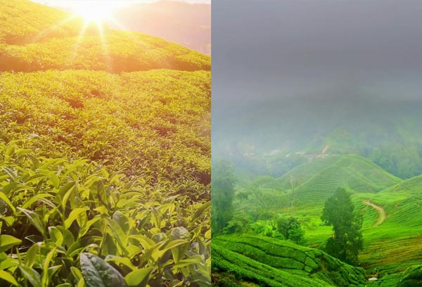

How does altitude and climatic conditions affect tea characteristics?
Altitude, soil, rainfall, and climate is collectively called as 'terroir' in tea production . It determines the flavor, appearance, and quality of the tea. For example, high grown tea like Nilgiri tea is grown in the hills of Tamil Nadu, almost 8000ft above sea level. These teas have flavors that are said to be more subtle and refined due to colder temperatures and slow growth rate of the tea plant.
On the other hand, in Assam, tea is grown closer to sea level and is called low grown tea. Please note a low grown tea is not of inferior quality. This low altitude region has a tropical climate, abundant rainfall and rich, fertile soil, which gives the tea brisk and denser flavor.
Characteristics of High grown tea
- Colder temperature slows the growth of the tea plants. These teas grow slowly, allowing essential oils and other attributes to build in the leaves.
- The slower growth rate helps the leaf to mature before it's picked and processed.
- Thick fog generally filter sunlight throughout the day, thus reducing the amount of sunlight to a few hours each day for these plants. They also get less oxygen. These factors result in producing young, extremely dark-green leaves.
- Moistened by the fog, the leaves are also more tender and softer. These factors have an effect of "softening" the flavor and adding delicate texture.
- Colder temperatures lead to lower yields, but the aroma, flavor, and character are remarkable.
- It has higher antioxidant levels.
- High grown teas are favoured by those who prefer a softer taste to their teas. Even if you brew your tea a little longer, you will still end up with a pleasant flavor.
- The highest commercial tea operations are around 8000 feet (about 2400m) in elevation.
- At higher altitude, tea leaves dry out before they are fully allowed to oxidize. Hence, Darjeeling first flush teas sometimes have a very green character, like green tea.
- In such tough conditions of colder temperatures and high altitudes, the tea plant releases more carbohydrates to the leaves to increase growth. Carbohydrates in the leaf add natural sweetness and subtle flavors to the high green tea.
- Colder temperatures also reduce the number of insects in the area and hence limit the usage of pesticides which sometimes causes bitter flavors in the tea.
- Too much water can dilute the natural flavors in the tea. Natural drainage at high altitudes reduces the amount of water in the leaves, which helps to preserve and intensify the existing flavor compounds.
Characteristics of Low grown tea
- With the tropical climate throughout the year and fertile soil, the weather allows tea plants to grow quickly. They produce long and well-proportioned leaves that turn intensely black on withering and are ideal for 'rolling'.
- As the weather conditions are particularly warm and dry they produce darker liquor in the cup.
- The teas grown at this altitude have a strong, denser flavor and aroma, and have distinctive qualities to it. It is mainly consumed as black tea.
- Low grown teas are known for their rich, full-bodied cup and a malty flavor, thus making it a classic breakfast tea to kick start your day!
- Low grown teas are more readily available then high grown teas because they have more space for growing along the base of the hill than towards the peak.
- Sometimes these teas are underpriced and sold as bulk teas or filler tea, that is, part of a blend.
These differences make drinking tea from different altitudes a delightful experience. The perfect blend of texture, flavor, and aroma make both these teas truly unique. Those who prefer a bright and strong cup of tea should settle for low grown tea. If you prefer a fragrant tea with a subtle flavor than high grown tea is your cup of tea. So, next time when you drink your favorite cup of tea, take a minute to think where it is grown.